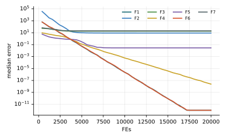

Chương 5 · Mục 5.2Chapter 5 · Section 5.2
Thuật toán đom đómFirefly AlgorithmFirefly Algorithm — FAFA — every light pulls the dimmer ones closer
Châu Văn Vân · PTITHCM
Mục tiêu bài họcLearning objectives
Sau chương này, bạn có thểAfter this chapter you will be able to
- Phát biểu ba quy tắc lý tưởng hóa của FA.State the three idealized rules of FA.
- Viết công thức độ hấp dẫn và phương trình di chuyển.Write the attractiveness formula and the movement equation.
- Giải thích vai trò của γ và α, và vì sao bầy tự chia nhóm.Explain the roles of γ and α, and why the swarm self-divides.
- Ước lượng chi phí tính toán O(n²) mỗi vòng lặp.Estimate the O(n²) cost per iteration.
Tổng quanOverview
Ánh sáng nhấp nháy của đom đómThe flashing light of fireflies
- Do Xin-She Yang đề xuất năm 2008.Proposed by Xin-She Yang in 2008.
- Đom đóm phát sáng để thu hút bạn tình và con mồi; con sáng hơn hấp dẫn hơn.Fireflies flash to attract mates and prey; brighter ones are more attractive.
- Cường độ sáng mà con khác nhìn thấy giảm theo khoảng cách, vì ánh sáng tỏa ra và bị không khí hấp thụ.The intensity others perceive fades with distance, since light spreads out and is absorbed by the air.
- Vì vậy mỗi con chỉ “thấy” rõ hàng xóm gần, và cả bầy tự chia thành nhiều nhóm nhỏ.So each firefly mainly “sees” nearby neighbours, and the swarm splits itself into small groups.
Ý tưởng cốt lõiCore idea
Ba quy tắc lý tưởng hóaThree idealized rules
Mô hình toán họcMathematical model
Độ hấp dẫn giảm theo bình phương khoảng cáchAttractiveness fades with squared distance
- β0: độ hấp dẫn tại : attractiveness at r = 0, thường lấy 1., usually 1.
- γ: hệ số hấp thụ ánh sáng, quyết định “tầm nhìn” của đom đóm.: light absorption coefficient, setting how far a firefly can “see”.
Mô hình toán họcMathematical model
Con mờ i bay về con sáng hơn jDimmer firefly i flies toward brighter j
- Lực hút kéo i về phía j, mạnh khi hai con ở gần, yếu khi ở xa.The attraction term pulls i toward j: strong when close, weak when far.
- εi: vector ngẫu nhiên, ví dụ đều trên [−0.5, 0.5] hoặc chuẩn; : random vector, e.g. uniform on [−0.5, 0.5] or Gaussian; α: biên độ bước ngẫu nhiên, thường giảm dần theo vòng lặp.: step size of the random walk, usually reduced over the iterations.
- Mỗi cặp (i, j) đều được so sánh, nên một vòng lặp tốn O(n²) phép so sánh.Every pair (i, j) is compared, so one iteration costs O(n²) comparisons.
Tham sốParameters
γ nằm giữa hai thái cựcγ sits between two extremes
| Giá trịValue | Đom đóm thấy gìWhat a firefly sees | Hành vi của bầySwarm behaviour |
|---|---|---|
| γ → 0 | Mọi con khác, rõ như nhauEvery other firefly, equally clearly | Cả bầy cùng bay về con sáng nhất, gần giống một dạng PSOThe whole swarm heads to the brightest, close to a form of PSO |
| γ → ∞ | Không thấy ai, như trong sương mù dàyNobody, as if in thick fog | Mỗi con đi ngẫu nhiên, thành tìm kiếm ngẫu nhiênEach moves randomly: pure random search |
| ở giữain between | Chỉ hàng xóm gầnOnly close neighbours | Bầy tự chia nhóm, mỗi nhóm bám một cực trị: hợp với bài toán đa cực trịThe swarm self-divides, each group settling on one optimum: good for multimodal problems |
Gợi ý thực hành: chọn γ theo cỡ miền tìm kiếm L, ví dụ γ ≈ 1 / L² đến 1 / L, rồi tinh chỉnh.Practical hint: scale γ with the size of the search domain L, e.g. γ ≈ 1 / L² to 1 / L, then tune.
Các bướcSteps
Các bước của FAFA step by step
Theo mã minh họa của Yang (2010); mỗi vòng tốn n lần đánh giá.Following Yang's reference code (2010); each iteration costs n evaluations.
- Khởi tạo n đom đóm; độ sáng = giá trị hàm mục tiêu.Initialize n fireflies; brightness = objective value.
- Với mỗi cặp (i, j): nếu j sáng hơn, i bay về j với độ hấp dẫn β(r).For each pair (i, j): if j is brighter, i moves toward j with attractiveness β(r).
- Thêm bước ngẫu nhiên α(rand − ½) nhân với độ rộng miền.Add a random step α(rand − ½) scaled by the domain width.
- Đánh giá lại toàn bộ; giảm α 3% mỗi vòng.Re-evaluate everyone; reduce α by 3% per iteration.
- Ghi nhớ đom đóm sáng nhất; lặp đến hết ngân sách.Memorize the brightest firefly; repeat until the budget is spent.
2 – 5 vòng lặp chínhmain loop
Thuật toánAlgorithm
Lưu đồFlowchart
Tham sốParameters
Tham số của FAFA parameters
| Tham sốParameter | Ý nghĩaMeaning | Giá trị thường dùngTypical value |
|---|---|---|
| β0, βmin | Độ hấp dẫn tại r = 0 và nhỏ nhấtAttractiveness at r = 0 and its minimum | 1, 0.2 |
| γ | Hệ số hấp thụ ánh sángLight absorption coefficient | 1 (khoảng cách chuẩn hóa) |
| α0 | Độ lớn bước ngẫu nhiên ban đầuInitial random step size | 0.2, giảm 3%/vòng |
Mã của giáo trình chuẩn hóa khoảng cách theo độ rộng miền để γ = 1 có cùng ý nghĩa trên mọi hàm.The textbook code normalizes distances by the domain width so that γ = 1 means the same on every function.
Thuật toán FAThe FA algorithm
Mã giảPseudocode
Hai vòng lặp lồng nhau so sánh từng cặp đom đóm.Two nested loops compare every pair of fireflies.
- Khởi tạo n đom đóm; độ sáng Ii theo f(xi)Initialize n fireflies; brightness Ii from f(xi)
- for t = 1 … T
- for i = 1 … n
- for j = 1 … n
- if Ij > Ii: di chuyển i về j, đánh giá lại Iimove i toward j, re-evaluate Ii
- Con sáng nhất đi một bước ngẫu nhiênThe brightest takes a random step
- Giảm α, ví dụ α ← 0.97 αReduce α, e.g. α ← 0.97 α
- return con sáng nhấtthe brightest
Mô phỏngSimulation
15 đom đóm trên cùng địa hình15 fireflies on the same landscape
Quầng sáng càng lớn, lời giải càng tốt. Với γ = 0.2, mỗi con chủ yếu bị hút bởi hàng xóm gần, nên bầy có thể chia ra bám vài hố cùng lúc.Bigger glow means a better solution. With γ = 0.2, each firefly is mainly pulled by close neighbours, so the swarm may split across several basins at once.
Tham số: β0 = 1, γ = 0.2, α0 = 0.25 · L, giảm 3% mỗi vòng.Settings: β0 = 1, γ = 0.2, α0 = 0.25 · L, reduced 3% per iteration.
Ví dụ tính tayWorked example
Một đom đóm bay về đom đóm sáng hơnOne firefly moving toward a brighter one
- xi = (0, 0), xj = (1, 1): r² = 2.xi = (0, 0), xj = (1, 1): r² = 2.
- β = 0.8 e−2 + 0.2 = 0.308.β = 0.8 e−2 + 0.2 = 0.308.
Kết quảResult
- Bỏ qua bước ngẫu nhiên: xi ← (0.308, 0.308).Ignoring the random step: xi ← (0.308, 0.308).
- Nếu γ = 10 thì β ≈ 0.2: đom đóm ở xa gần như chỉ thấy βmin.With γ = 10, β ≈ 0.2: distant fireflies see only βmin.
Ứng dụngApplications
Ứng dụng của FAFA applications
FA hợp với bài toán đa đỉnh nhờ tự chia bầy thành các nhóm con.FA suits multimodal problems because the swarm splits into subgroups.
Thiết kế kỹ thuậtEngineering design
Bình áp lực, dầm hàn, lò xo.Pressure vessel, welded beam, spring.
Xử lý ảnhImage processing
Phân ngưỡng đa mức, nén ảnh.Multi-level thresholding, image compression.
Lập lịchScheduling
Bản rời rạc cho job-shop.Discrete versions for job-shop.
Tối ưu đa phương thứcMultimodal optimization
Tìm nhiều cực trị cùng lúc.Finding several optima at once.
Thực nghiệm · FAExperiment · FA
Kết quả trên bộ 7 hàm, D = 10, 30 lần chạyResults on the 7-function suite, D = 10, 30 runs
| HàmFunction | Trung bìnhMean | Độ lệchStd | Trung vịMedian | so PSOvs PSO |
|---|---|---|---|---|
| F1 · Sphere | 0 | 0 | 0 | ≈ |
| F2 · Rosenbrock | 1.57e+2 | 3.93e+2 | 8.76e+0 | − |
| F3 · Rastrigin | 1.84e+1 | 6.14e+0 | 1.79e+1 | − |
| F4 · Ackley | 2.40e−8 | 4.05e−9 | 2.43e−8 | − |
| F5 · Griewank | 3.11e−2 | 1.71e−2 | 2.83e−2 | + |
| F6 · Shifted Sphere | 0 | 0 | 0 | ≈ |
| F7 · Shifted Rastrigin | 2.05e+1 | 8.92e+0 | 2.04e+1 | − |
- Sai số f(xbest) − f* sau 20 000 lần đánh giá; n = 30; tham số mặc định của bài gốc; giá trị < 10−8 ghi là 0.Error f(xbest) − f* after 20,000 evaluations; n = 30; default parameters of the original paper; values < 10−8 shown as 0.
- Cột cuối: Wilcoxon rank-sum với PSO (α = 0.05): + tốt hơn, − kém hơn, ≈ không khác biệt.Last column: Wilcoxon rank-sum vs PSO (α = 0.05): + better, − worse, ≈ no difference.
- Xếp hạng Friedman trung bình: 8.64, đứng thứ 9/18 trong 18 thuật toán của giáo trình.Average Friedman rank: 8.64, position 9/18 among the textbook’s 18 algorithms.
Thực nghiệm · FAExperiment · FA
Đường hội tụ (trung vị 30 lần chạy)Convergence (median of 30 runs)

Mã nguồnSource code
Mã nguồn PythonPython source code
Đoạn trích phần cập nhật chính; tệp đầy đủ có chú thích và tham số mặc định theo bài gốc.Excerpt of the main update; the full file documents the default parameters of the original paper. code/si/algorithms/fa.py
while not prob.done: Xn = X.copy() for i in range(n): for j in range(n): if f[j] < f[i]: r2 = np.sum(((X[i] - X[j]) / scale) ** 2) beta = (beta0 - beta_min) * np.exp(-gamma * r2) + beta_min Xn[i] = Xn[i] * (1 - beta) + X[j] * beta + alpha * (rng.random(prob.dim) - 0.5) * scale b = int(np.argmin(f)) Xn[b] = X[b] + alpha * (rng.random(prob.dim) - 0.5) * scale # con sáng nhất đi ngẫu nhiên X = prob.clip(Xn) f = prob(X) alpha *= decay return prob.best_x, prob.best_f
Chạy lại toàn bộ thực nghiệm: python -m experiments.run_continuous trong thư mục code/ (xem PROTOCOL.md).Reproduce all experiments: python -m experiments.run_continuous inside code/ (see PROTOCOL.md).
Đánh giáAssessment
Mạnh ở bài toán đa cực trị, nhưng tốn phép so sánhStrong on multimodal problems, but comparison-hungry
Điểm mạnhStrengths
- Tự chia nhóm, có thể tìm nhiều cực trị cùng lúc.Self-grouping lets it find several optima at once.
- Không cần thông tin toàn cục như gbest, dễ chạy song song.Needs no global information such as gbest; easy to parallelize.
- Biến thể: FA rời rạc cho lập lịch và TSP, FA hỗn loạn, FA đa mục tiêu.Variants: discrete FA for scheduling and TSP, chaotic FA, multi-objective FA.
Hạn chếLimitations
- O(n²) phép so sánh mỗi vòng; nếu đánh giá lại sau mỗi lần di chuyển, số lần gọi hàm mục tiêu cũng tăng theo.O(n²) comparisons per iteration; re-evaluating after every move also multiplies objective calls.
- Nhạy với γ và α; γ phải theo tỉ lệ miền tìm kiếm.Sensitive to γ and α; γ must match the domain scale.
- Nếu α không giảm, bầy dao động quanh nghiệm mà không hội tụ chính xác.Without reducing α, the swarm jitters around the optimum without converging precisely.
Bài tập và thực hànhExercises and labs
Luyện tập: tính tay rồi lập trìnhPractice: by hand, then in code
Bài tập lý thuyếtTheory exercises
- Với β0 = 1, γ = 1, tính β tại r = 1 và r = 2. Nhận xét.With β0 = 1, γ = 1, compute β at r = 1 and r = 2. Comment.
- Mô tả hành vi của bầy khi γ → 0 và khi γ → ∞.Describe the swarm when γ → 0 and when γ → ∞.
- Với n = 20, tối đa bao nhiêu lần đánh giá hàm mỗi vòng nếu đánh giá lại sau mỗi lần di chuyển?With n = 20, at most how many evaluations per iteration if you re-evaluate after every move?
Thực hành Python / MATLABPython / MATLAB labs
- Cài FA cho hàm Ackley 10 chiều.Implement FA for the 10-D Ackley function.
- Khảo sát γ ∈ {0.01, 0.1, 1, 10} và ghi số nhóm hình thành.Study γ ∈ {0.01, 0.1, 1, 10} and record how many groups form.
- Mục 5.3: so sánh ABC và FA với cùng số lần đánh giá hàm, 30 lần chạy, kiểm định Wilcoxon.Section 5.3: compare ABC and FA under the same evaluation budget, 30 runs, Wilcoxon test.
Tài liệu tham khảo (1/2)References (1/2)
Đọc thêm: các bài báo gốcFurther reading: the original papers
- D. Karaboga, “An idea based on honey bee swarm for numerical optimization,” Erciyes Univ., Kayseri, Turkey, Tech. Rep. TR06, 2005.
- D. Pham, A. Ghanbarzadeh, E. Koç, S. Otri, S. Rahim, and M. Zaidi, “The Bees Algorithm — A Novel Tool for Complex Optimisation Problems,” in Intelligent Production Machines and Systems, Elsevier, 2006, pp. 454–459, doi: 10.1016/B978-008045157-2/50081-X.
- D. Karaboga and B. Basturk, “A powerful and efficient algorithm for numerical function optimization: artificial bee colony (ABC) algorithm,” J Glob Optim, vol. 39, no. 3, pp. 459–471, 2007, doi: 10.1007/s10898-007-9149-x.
- X.-S. Yang, Nature-Inspired Metaheuristic Algorithms. Frome, U.K.: Luniver Press, 2008.
- X.-S. Yang, “Firefly Algorithms for Multimodal Optimization,” in Lecture Notes in Computer Science, Springer Berlin Heidelberg, 2009, pp. 169–178, doi: 10.1007/978-3-642-04944-6_14.
- G. Zhu and S. Kwong, “Gbest-guided artificial bee colony algorithm for numerical function optimization,” Applied Mathematics and Computation, vol. 217, no. 7, pp. 3166–3173, 2010, doi: 10.1016/j.amc.2010.08.049.
- D. Karaboga and B. Akay, “A modified Artificial Bee Colony (ABC) algorithm for constrained optimization problems,” Applied Soft Computing, vol. 11, no. 3, pp. 3021–3031, 2011, doi: 10.1016/j.asoc.2010.12.001.
Tài liệu tham khảo (2/2)References (2/2)
Đọc thêm: các bài báo gốcFurther reading: the original papers
- X. S. Yang and X. He, “Firefly algorithm: recent advances and applications,” IJSI, vol. 1, no. 1, pp. 36, 2013, doi: 10.1504/IJSI.2013.055801.
- M. O. Okwu and L. K. Tartibu, Metaheuristic Optimization: Nature-Inspired Algorithms Swarm and Computational Intelligence, Theory and Applications. Springer International Publishing, 2021, doi: 10.1007/978-3-030-61111-8.
Tóm lạiIn short
Cảm ơn các bạn đã theo dõiThank you for your attention
Châu Văn Vân · PTITHCM · Tài liệu gốc: X.-S. Yang, Nature-Inspired Metaheuristic Algorithms, Luniver Press, 2008Original source: X.-S. Yang, Nature-Inspired Metaheuristic Algorithms, Luniver Press, 2008